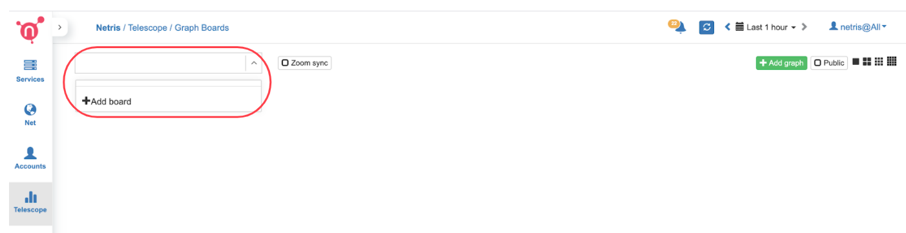
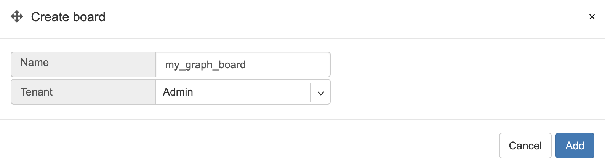
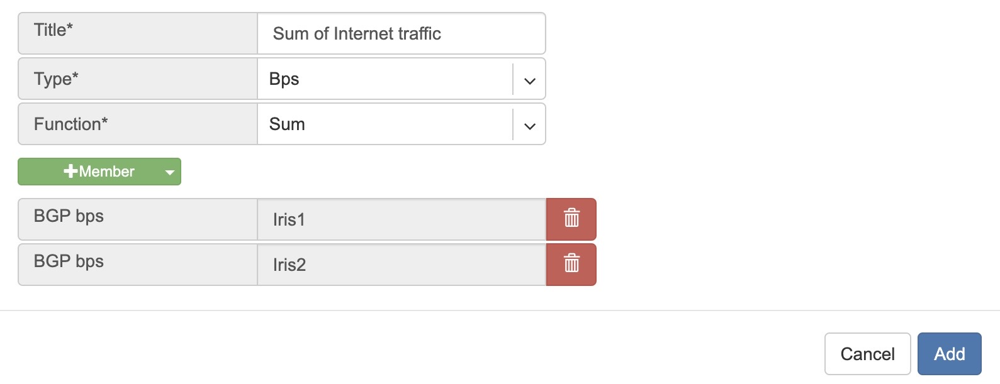
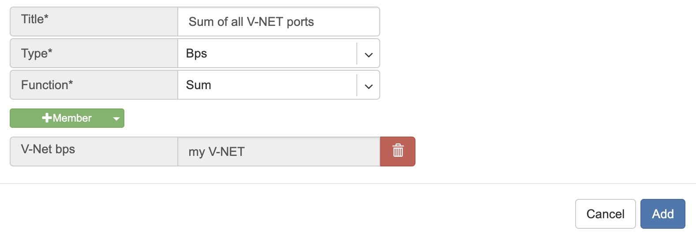
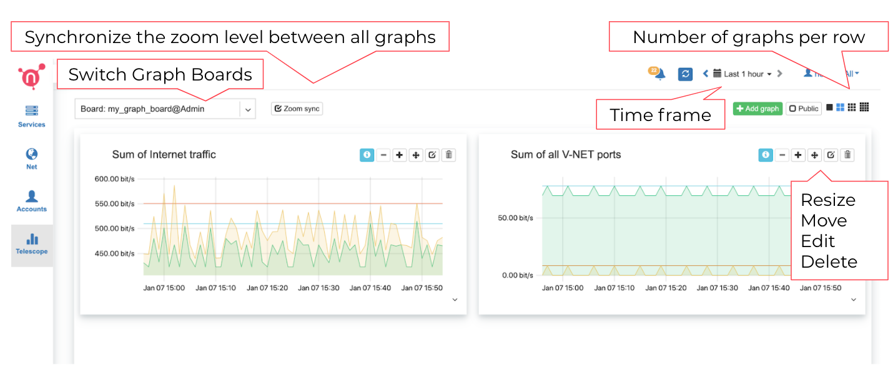
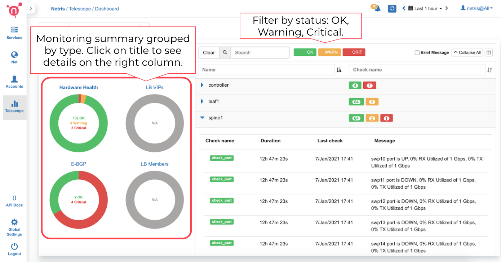
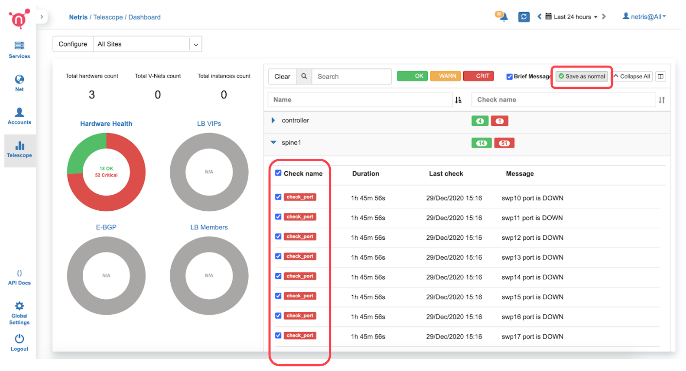

Visibility (Telescope)¶
Graph Boards¶
You can create custom graph boards with data sources available in different parts of the system. You can even sum multiple graphs and visualize them in a single view.
To start with Graph Boards, first, you need to add a new Graph Board.
Navigate to Telescope→Graph Boards, open the dropdown menu in the top left corner, then click +Add board.

Type a name and assign it to one of the tenants that you manage. Later on, you can optionally mark the Graph Board as public if you want the particular board to be visible to all users across multiple tenants.

Now you can add graphs by clicking +Add graph.
Description of +Add graph fields:
Title - Title for the new graph.
Type - Type of data source.
Bps - Traffic bits per second.
Pps - Traffic packets per second.
Errors - Errors per second.
Optical - Optical signal statistics/history.
MAC Count - History of the number of MAC addresses on the port.
Function - Currently, only summing is supported.
+Member - Add data sources by service (E-BGP, V-NET, etc..) or by Switch Port.
Example: Sum of traffic on two ISP(Iris1 + Iris2) links.

Example: Sum of the traffic on all ports under the service called “my V-NET”

Screenshot: Listing of a Graph Board with the explanation of the controls.

API Logs¶
Comprehensive logging of all API calls sent to Netris Controller with the ability to search by various attributes, sort by each column, and filter by method type.
Dashboard¶
Netris, besides automatic configuration, also provides automatic monitoring of the entire network without the need for configuration of the monitoring systems.
Telescope→Dashboard summarizes Network Health, which can also be accessed by clicking on the Netris icon in the top left corner.
Description of the pie charts.
Hardware Health - summary of CPU, RAM, disk utilization. Statuses of power supplies, fans, temperature sensors, critical system services, and time synchronization. Statuses of switch port link, utilization, optical signal levels, and BGP sessions.
E-BGP - Statuses of external BGP sessions.
LB VIP - Statuses of Load Balancer frontend / VIP availability.
LB Members - Statuses of Load Balancer backend members.
By clicking on each title you can see the details of the checks on the right side.
Screenshot: Dashboard showing details of “Hardware Health.”

Port up/down state can be set to “Save as normal.” So the system will alarm only if the actual state is different from the saved as the normal state.
Screenshot: “Save as normal” on selected ports.
